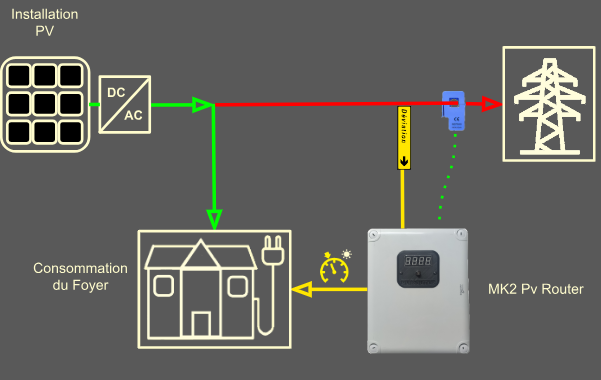
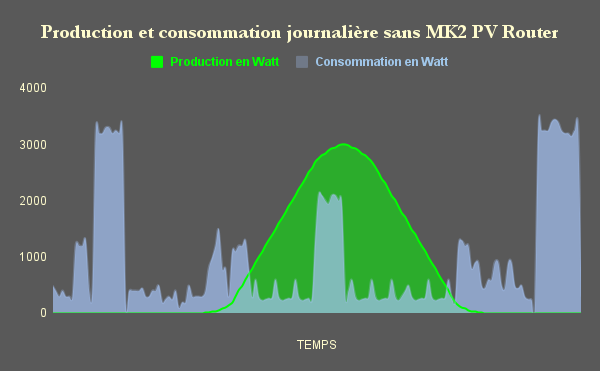
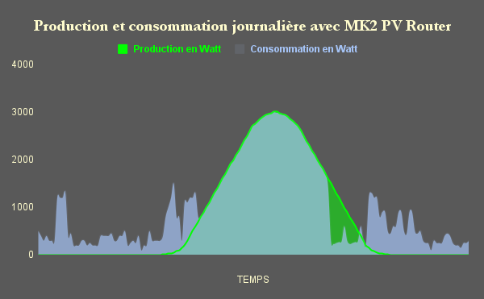

Bienvenue dans la documentation du Mk2PVRouter !
Le MK2 PV Router est l’accessoire indispensable lorsque l’on souhaite optimiser son autoconsommation.
Particulièrement adapté à l’alimentation de résistances (chauffe-eau, radiateur, sol chauffant) du fait de son alimentation à puissance variable, il saura orienter votre surplus vers le ou les équipements raccordés.
Le routeur surveille en permanence la production d’énergie de votre système en autoconsommation et redirige tout excédent d’électricité vers les charges branchées.
Grâce aux modules sortie-relais, il peut aussi gérer des installations de chauffage ou toutes sortes d’appareils avec ses fonctions de programmateurs horaire, temporisations, thermostats, préparation ECS, chauffage… toutes configurables librement.
Ce routeur existe en 2 versions, une version monophasée, exclusivement pour les raccordements monophasés, et une triphasée pour les raccordements en triphasé.
Seul le type de raccordement au réseau électrique (Enedis ou régie locale) est important, peu importe que la production d’électricité soit en monophasé ou que l’on utilise que des appareils monophasés.
À retenir
Peu importe l’installation de production d’électricité (monophasée, biphasée, triphasée), le routeur DOIT correspondre au type de raccordement au réseau électrique.
Raccordement au réseau électrique triphasé = routeur triphasé

Schéma d’implantation.
Les 2 graphiques suivants vous montrent une production et une consommation typiques d’un foyer.
Les pics importants représentent la consommation classique dûe au fonctionnement d’un chauffe-eau.

Production et consommation typiques SANS Mk2PVRouter

Production et consommation typiques AVEC Mk2PVRouter
Le routeur va permettre de décaler la consommation du chauffe-eau aux moments où l’on produit sa propre électricité gratuite (hors amortissement bien sûr du système de production).
Glossaire